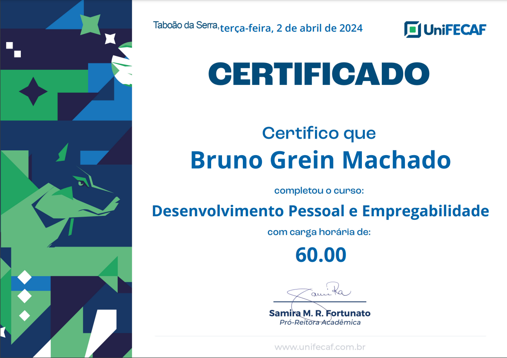

Certificados
.pdf.png)
Desenvolvimento Web Full Stack
Genial Cursos - Concluído em 2024

Desenvolvimento Pessoal e Empregabilidade
UniFECAF - Concluído em 2024
Olá, Meu nome é Bruno tenho 22 anos e a 7 meses, embarquei na jornada de aprendizagem de programação e desde então, me apaixonei por esse mundo de possibilidades e desafios. Nesse período, me dediquei a estudar diferentes linguagens e ferramentas, sempre buscando aprimorar minhas habilidades e resolver problemas,
Minha aplicação vem da vontade de aprender mais a cada dia e aplicar o conhecimento adquirido em projetos reais. Agora, estou em busca da minha primeira oportunidade profissional, onde poder contribuir e, ao mesmo tempo, continuar crescendo como desenvolvedor. Estou especialmente interessado em vagas remotas, pois sou pcd e não tem vagas por perto com acessibilidade,
essa e uma pequena introdução sobre mim vamos conversar!
venho me dedicando intensamente ao estudo de programação, adquirindo conhecimentos em tecnologias como HTML, CSS, JavaScript, React e Bootstrap,tailwild. Durante esse período, também concluí um curso Full Stack, o que ampliou a visão sobre desenvolvimento, mas foi no Front-End que mais me identifiquei. criar interfaces intuitivas e funcionais, que proporcionem uma experiência agradável aos usuários. Além disso, estou cursando Análise e Desenvolvimento de Sistemas (ADS) EAD na faculdade FECAF, atualmente no segundo semestre, o que tem complementado meus estudos com uma base sólida
Estou sempre em busca de novos desafios e oportunidades para expandir meus conhecimentos. Acredito que a aprendizagem contínua sempre vamos ter novos conhecimentos para desenvolver.
Genial Cursos - Concluído em 2024
UniFECAF - Concluído em 2024
Telefone: +55 (49) 98505-7431
Email: greinmachado@gmail.com